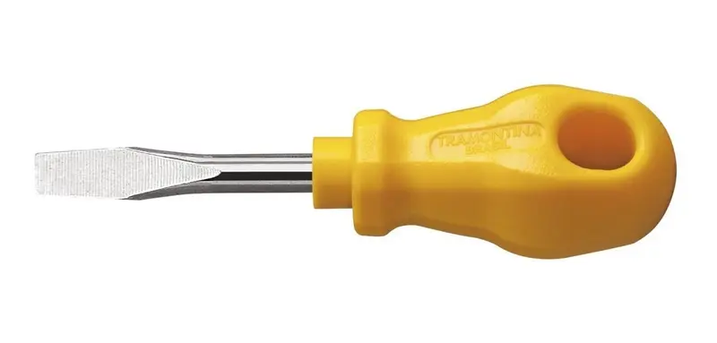

Módulo 2: Ferramentas e Insumos
Para montar um computador com precisão, você não precisa de muitas ferramentas, mas precisa das ferramentas certas.

1. Chave Philips (Cruz)
É a principal ferramenta. Usada em 90% dos parafusos do PC: placa-mãe, gabinete, fonte e discos rígidos.

2. Chave de Fenda (Chata)
Menos comum em parafusos modernos, mas útil para fazer alavancas leves ou abrir travas específicas de alguns gabinetes antigos.

3. Luvas Antiestáticas
Uma alternativa moderna à pulseira. Elas impedem que a gordura das mãos e a eletricidade estática entrem em contato direto com os circuitos sensíveis.

4. Pasta Térmica
O insumo mais importante para a temperatura. Ela preenche as imperfeições microscópicas entre o processador e o cooler.
Tudo pronto na bancada?
Responda o quiz sobre ferramentas para liberar a conclusão.